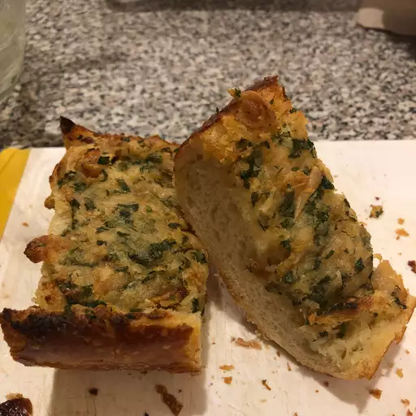

Roasted Garlic Bread Recipe

This garlic bread spread recipe makes tasty homemade garlic bread that goes great with most Italian dishes. I usually make it with chicken Parmesan. Delicious!
Ingredients
- 3 heads garlic
- 2 tablespoons olive oil
- 1 (1 pound) loaf Italian bread
- ½ cup butter, softened
- 2 tablespoons grated Parmesan cheese (Optional)
- 1 tablespoon chopped fresh parsley (Optional)